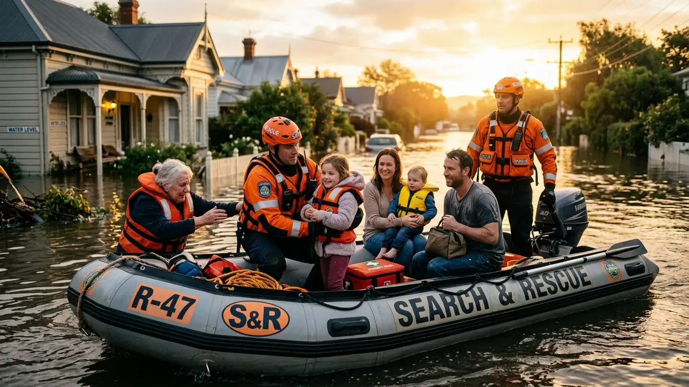
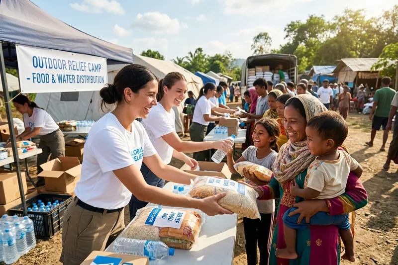

The monsoon water reached our roofs within hours. Stackly's inflatable boats extracted my entire family safely. The food crates and medicine they brought afterward helped us survive the hardest days. Today, my shop is open again.
Active Emergency response active
Together We Respond.
Together We Rebuild.
Providing rapid disaster relief, emergency assistance, critical medical supplies, clean food, and shelter for communities hit by extreme natural events.
24h
Crisis Dispatch
100%
Direct Field Aid

0
People Helped
0
Emergency Responses
0
Active Volunteers
0
Communities Supported

Who We Are
Committed to Humanity's Hardest Moments
The Disaster Relief Foundation is committed to standing on the frontlines for families impacted by floods, fires, cyclones, earthquakes, and severe storms. We mobilize teams instantly to secure and restore human dignity when disasters shatter lives.
Immediate Response
Failsafe teams deploy within hours of a major disaster notification.
Long-term Recovery
We stay past the news cycle, helping rebuild infrastructure and safety nets.
What We Do
Emergency Support Frameworks
Our response operations cover key pillars of humanitarian survival and rehabilitation.
Emergency Rescue
Ground and water rescue squads deploying to stranded communities during flood and weather disasters.
Learn MoreFood & Clean Water
Immediate distribution of dry food supplies, warm meals, and water purification units to disaster zones.
Learn MoreMedical Assistance
Mobile emergency clinics, trauma first-aid responders, and medicine transport to affected areas.
Learn MoreTemporary Shelters
Rapid assembly tents, sleeping kits, and transitional communal camps for displaced survivors.
Learn MoreEmergency Supplies
Distribution of hygiene packs, warm clothing, solar lanterns, and utility tools for emergency survival.
Learn MoreCommunity Recovery
Clearing debris, restoring public infrastructure, rebuilding schools, and organizing livelihood recovery.
Learn More
Active Missions
Emergency Mobilization Tracking
Real-time status of critical recovery deployments requiring community assistance.
Critical Response
Active 4 days ago
Monsoon Floods Emergency
Distributing rescue boats, clean water packets, and setting up emergency shelter tents in high-water rural sectors.
Support Goal: $120,000
82% Funded
People Dispatched
120 Rescuers
Supplies Distributed
15,000 Packs
Critical Response
Active 12 days ago
Coastal Cyclone Rehabilitation
Repairing damaged housing units, medical camps coordination, and installing solar micro-grids for storm-torn shore villages.
Support Goal: $250,000
58% Funded
Reconstructed homes
48 Shelters
Community centers
3 Restored
Rehabilitation
Active 30 days ago
Inland Fire Relief Campaign
Providing food subsidies, temporary transitional housing cabins, and clothing relief packs for forest-fire victims.
Support Goal: $80,000
94% Funded
Families Assisted
340 Families
Health Screenings
1,200 Cases
Rehabilitation
Active 45 days ago
Earthquake Reconstruction
Clearing massive mountain road blockages, structural testing for public schools, and livelihood assistance grants.
Support Goal: $300,000
74% Funded
Schools Evaluated
12 Facilities
Grants Distributed
$85,000 Paid
Our Methodology
The Disaster Response Pipeline
A structured operational path guaranteeing transparency and maximum efficiency from impact to recovery.
1
Assess
Within 6 hours of incident detection, we perform aerial assessments, dispatch drone trackers, and interface with local emergency dispatchers to map critical hotspots.
2
Respond
Mobile response squads mobilize carrying life-saving equipment, first-aid support systems, clean water filtration bags, and instant foods.
3
Support
We establish temporary operational camps providing psychological counseling, continuous hot meals, health diagnostics, and children support zones.
4
Rebuild
Collaborating with local building councils, we reconstruct school frameworks, repair critical water supplies, and distribute micro-grants to restore local economic stability.
Step Forward. Save Lives.
Our volunteer squad forms the primary logistics engine of our disaster relief operations. Whether you are a trained rescue swimmer, medical expert, or community planner, your hands can help restore hope.
Become a VolunteerEmergency Teams
Deploy in frontline boat rescues and storm support zones.
Supply Logistics
Coordinate, package and sort emergency food crates at base camps.
Medical Reserves
Triage, trauma care, and psychological assistance during alerts.
Advocates
Raise crucial relief funds and coordinate corporate disaster pledges.
Impact Chronicles
Stories of Recovery and Resilience
True testimonies from community residents assisted by our rescue squads and donors.
Your Support Can Help Someone Rebuild.
Every minute counts in a disaster response window. Join us as a donor, volunteer, or advocate today and bring urgent relief to a family in crisis.